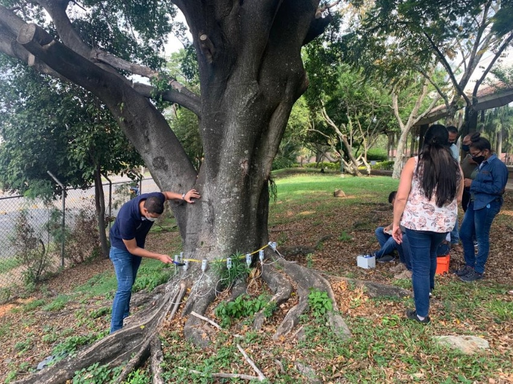
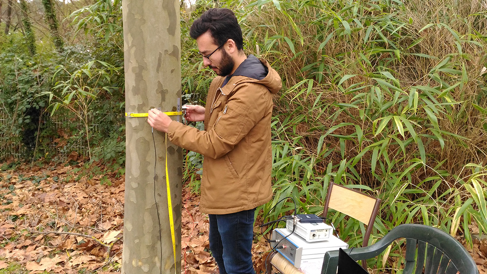
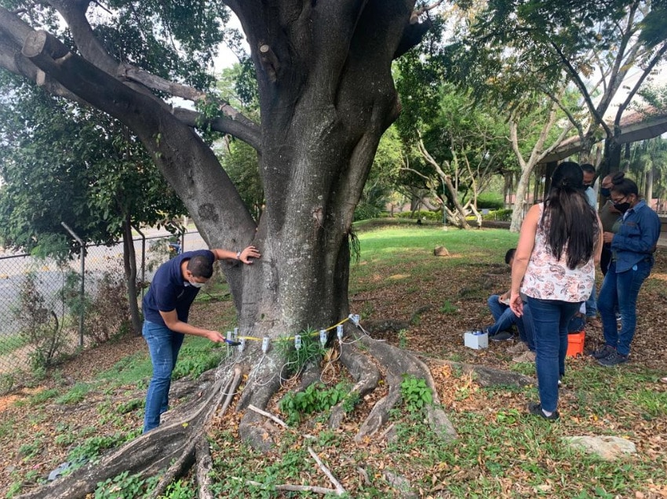
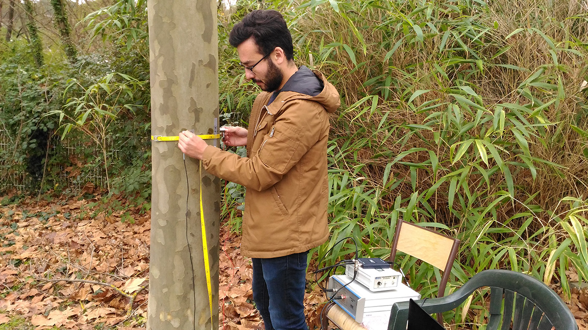

THE
CLEAN
GARDEN
THE CLEAN GARDEN
Sobre nosotros
Somos una empresa con más de 20 años de eperiencia orientada a dar soluciones integrales para espacios verdes de mediana y gran escala en espacios públicos, empresas o particulares.
Desarrollo y mantenimiento de espacios verdes.
Los espacios verdes constituyen uno de los principales articuladores de la vida social.
Son lugares de encuentro, de integración, promueven la diversidad cultural generan valor simbólico, identidad y pertenencia.
Los espacios verdes cumplen funciones estéticas, enriquecen paisajes y asumen un papel central de oxigenación.
Asimismo, contribuyen en la regulación hídrica y en la reducción del impacto de la ciudad o industria construida sobre el medio ambiente. Y ofrecen un ecosistema apropiado para la conservación de la biodiversidad.
Desde su forma urbana también juegan un rol importante en la estructuración de la ciudad como ordenadores de la trama, cualificando el tejido, orientando el crecimiento y vinculando espacios.
Por estos motivos es tan importante la gestión de su mantenimiento.
Construcción de espacios verdes, parquizaciones.
Ejecutamos tareas de construcción de espacios verdes de toda índole, cualquiera sea su escala.
Contamos con gran experiencia en el área presentando propuestas a medida de cada cliente.
Ejemplo de tareas que se realizan en este tipo de obras:
Replanteos de obra, movimientos de tierra y nivelaciones, plantaciones forestaciones, trasplantes de ejemplares, implantación de césped, formación de canteros, construcción de caminos, senderos y mobiliario, instalación de sistemas de riego, etc.
Construcción y mantenimiento de campos deportivos.
Construcción y mantenimiento de campos deportivos. En virtud de ello efectuamos las tareas iniciales de nivelación, desmonte, terrapleando, construcción de drenes, conformación de estratos, drenaje y portante e implementación de césped, para luego pasar a las tareas clásicas de mantenimiento tales como corte, riego, fertilización, aireación y descompactado de la capa portante, corte vertical y eliminación de thatch, top-dressing, resiembra, etc.
.jpg)
.jpg)
Tomografía de árboles
Se trata del diagnóstico de la sanidad del arbolado mediante el uso de una herramienta de diagnóstico de última generación y novedosa en nuestro país, el Tomógrafo Sónico. Esta herramienta es una ayuda para detectar que tipo de tratamiento es necesario para cada caso, prevaleciendo siempre la vida del ejemplar, ya que por medio de los resultados del estudio se puede realizar una reducción de copa, un balanceo, y en última instancia, dado el riesgo se informara que será necesaria tu extracción.
Función y características del tomógrafo sónico
El tomógrafo sónico Picus es una herramienta de diagnóstico por imágenes usada para analizar y cuantificar el estado interno de la madera de los árboles vivos y así determinar el grado de peligrosidad del arbolado.
El Tomógrafo sónico entrega una imagen de la sección del tronco a la altura a la que se realiza el estudio, que indica mediante colores el estado de la madera. Los colores negros y marrones oscuros indican madera en perfecto estado, el marrón claro indica madera ligeramente alterada, los verdes estados medios de putrefacción, los violetas madera muy alterada y los celestes y blancos, ahuecamientos.
En las imágenes superiores se observan distintos grados de daño, siendo el caso de la izquierda un árbol sin daño interno de la madera. El caso de la derecha se trata de un ahuecamiento interno severo y el caso del centro es el caso de un árbol con daño leve moderado. Este estudio es de suma utilidad para detectar y cuantificar daños o ahuecamientos internos sin heridas visibles.
El estudio se completa con la observación visual de indicadores de peligrosidad, como ramas secas, ahuecamientos en ramas primarias, grietas, abultamientos, raíces estrangulantes, etc. y parámetros dasométricos del árbol evaluado. El estudio es realizado por un técnico especialiste en arbolado urbano.
Se entrega un informe por árbol evaluado con el Diagnóstico y las Recomendaciones de Manejo.
 


